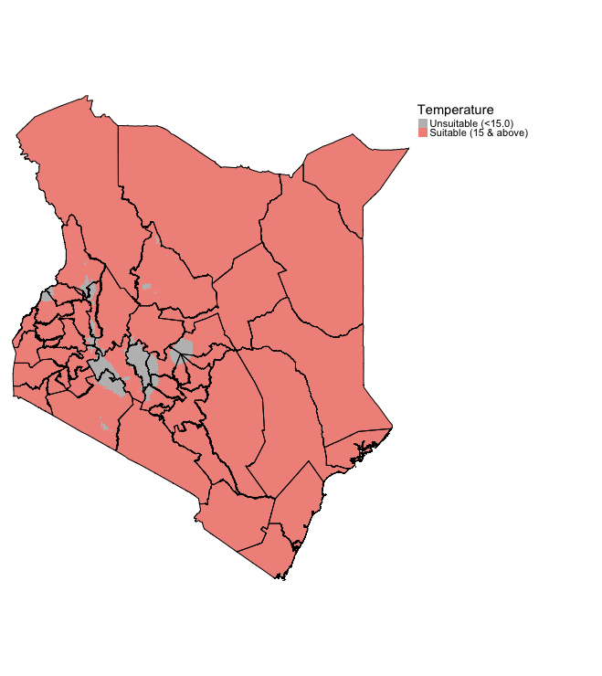

4 Suitability Mapping: Part 1
4.1 Introduction
Now, with the proliferation of open spatial dataset, risk models derived from environmental, sociodemographic and topological factors are becoming increasingly available for open research. Such models have broadly shown to be useful in delineating geographical areas of risk or suitability for a certain outcomes. Today, we are going to explore this qualitatively using a knowledge-driven approach.
4.1.1 Learning outcomes
To provide an introductory overview to the applicability of knowledge-driven methods, in particular, we are going to learn the Multi-Criteria Decision Approach (MCDA) which is a method that use decision rules from existing knowledge to identify areas potential suitability for an outcome. It is especially useful in data-sparse situations, or when for the first time exploring the potential geographical limits of certain outcome.
For instance, using modest number of raster layers such as population density, urbanisation, approximating to street segments, house prices and deprivation; it is possible to combine such information so to determine regions for which crime events such as burglaries are likely to occur, or suitable in that matter. This approach has been widely used in a number of disciplines over the last decades, and has gained prominence in public health related fields such as vector-borne disease prevention, and disaster sciences such as landslides. We will learn how to apply these methods to the two context.
4.1.2 Datasets & setting up the work directory
Before you begin do make sure to download all data by clicking here. Create a folder on called “Week 4” within your “GEOG0114” folder stored in the desktop of your personal computer. Make sure to extract all data from the zip folder and store it into “Week 4” folder. Open a new R script and set the work directory to Week 4’s folder.
For Windows, the work directory will be:
setwd("C:/Users/AccountName/Desktop/GEOG0114/Week 4")For MAC, the work directory will be:
setwd("/Users/AccountName/Desktop/GEOG0114/Week 4")4.1.3 Loading and installing packages
We will need to load the following packages:
sf: Simple Featurestmap: Thematic Mappingraster: Raster/gridded data analysis and manipulationsp: Package for providing classes for spatial data (points, lines, polygons and grids)
The above packages sf, tmap, raster & sp should have been installed in the previous session(s). We will need to install a new package:
spatialEco- Spatial Analysis and Modelling Utilities package, which provides the user further functions such asraster.invert()which we will need in the third section.BAMMtools- It provides the user access to an important functiongetJenksBreaks()for theAHPanalysis in the third section.
# Install the packages: spatialEco using the install.package()
install.packages("spatialEco")
install.packages("BAMMtools")
# Load the packages with library()
library("sf")
library("tmap")
library("raster")
library("sp")
library("spatialEco")
library("BAMMtools")4.1.4 Loading datasets
We will be dealing with raster data only for this exercise. These will be a series of climate, environmental and other social-anthropogenic gridded data from Kenya. We are going to combine them in order to determine areas that are suitable for disease transmission of Lymphatic Filariasis, a neglected tropical disease, caused by a range of mosquitoes that spread the parasitic worms called the Wuchereria bancrofti through a mosquito bite.
There is evidence that indicates that precipitation, temperature, population density, aridity, dryness, land surface elevation and vegetation are risk factors for mosquito infestation, and in turn, greatly influencing the way mosquitoes breed and feeding behaviour within human dwellings thus maintaining disease transmission. We will use the following techniques for mapping areas of suitability:
- Binary Classification & Ranking
- Suitability Mapping using Weighted Overlay Analysis
- MCDA Mapping
Lets begin loading the following list of raster files, each is a variable of interest:
- Raster: Mean Temperature in Kenya (1000m resolution) named
Kenya Mean Teperature.tif - Raster: Normalized Difference Vegetation Index in Kenya (1000m resolution) named
Kenya NDVI.tif - Raster: Precipitation in Kenya (1000m resolution) named
Kenya Precipitation.tif - Raster: Population Density in Kenya (1000m resolution) named
Kenya Population Density.tif - Raster: Land Surface Elevation in Kenya (1000m resolution) named
Kenya Elevation.tif - Raster: Levels of Dryness in Kenya (1000m resolution) named
Kenya Aridity Index.tif
temp <- raster("Kenya Mean Teperature.tif")
nvdi <- raster("Kenya NDVI.tif")
prec <- raster("Kenya Precipitation.tif")
popl <- raster("Kenya Population Density.tif")
elev <- raster("Kenya Elevation.tif")
arid <- raster("Kenya Aridity Index.tif")
# ignore those stupid warning messages as these are annoying as hell and are related to same migration/updates done on PROJ4 to PROJ6 - which I can't for the life of me figure out how to implement this bloody update.Load the shapefile nation and state borders for Kenya:
- Shape file: Kenya’s National border named
Kenya_Border_3857.shp - Shape file: Kenya’s State border named
Kenya_States_3857.shp
# load the shapefiles
kenya_border <- st_read("Kenya_Border_3857.shp")
kenya_states <- st_read("Kenya_States_3857.shp")IMPORTANT NOTES: All shape file and raster data were in projected to the CRS: Spherical mercator 3857
You can inspect each raster to know its dimension, extent, resolution and minimum and maximum values. Since are going to stack all the rasters together, you definitely want the: dimension, extent and resolution to be the same. If there’s a slight difference the stack won’t work.
# for instance temp and aridity
temp
aridTo visualize raster data - you can write the following code:
# For instance take the mean temperature for Kenya
# Spectral colours are useful for diverging scales "Spectral" is Rd-Or-Yl-Gr-Bu. "-Spectral" reverses the order
tm_shape(temp) + tm_raster(style = "cont", title = "Mean Temperature", palette= "-Spectral") +
tm_shape(kenya_states) + tm_polygons(alpha = 0, border.col = "black") +
tm_layout(frame = FALSE, legend.outside = TRUE)4.2 Suitability mapping using Simple Overlays
4.2.1 Setting up binary classification on raster
One thing to know about this approach - the mappings are purely knowledge-driven and not analytical. For instance, according to previous studies (see example of papers: 1 & 2), we have learnt a bit about the limits or thresholds for these predictors from or below which we can consider an area being suitable for the occurrence of Lymphatic Filariasis (LF).
We have summarized these limits or thresholds in a table as follows:
| Risk factor | Threshold for suitability |
|---|---|
Temperature |
> 15.0 (degree Celsius) |
Precipitation |
> 350 (mm of rainfall) |
Aridity |
> 0.20 (i.e., semi-arid (> 0.5) dry sub-humid) |
Elevation |
< 1200m (low land) |
Population Density |
> 0 (Inhabitants must exist source for blood meal) |
NDVI |
> 0.5 (mild levels of vegetation) |
We should use the aforementioned thresholds to produce binary or Boolean maps using the above criteria. This means that the pixel values of each raster layer will be equal to 0 indicating that its an unsuitable condition for LF transmission, and 1 for suitable conditions for LF transmission.
Let us reclassify each layer according to the above criteria, starting with temperature:
# reclassify temperature as a binary or Boolean layer
temp
# lowest value = 1.2
# highest value = 29.6
# reclassify anything below 15 as 0 and above as 1
# take the minimum value and minus 1 to it to ensure that lowest
# ---value is included in the categorization for 0
# take the maximum value and add 1 to it to also ensure that the highest
# ---value is included in the categorization for 1
# c(from lowest value, to threshold, class as 0, from thresholds, to maximum value, class as 1)
temp_cl <- c(temp@data@min-1, 15, 0, 15, temp@data@max+1, 1)
# convert into a matrix format
temp_cl_mat <- matrix(temp_cl, ncol = 3, byrow = TRUE)
# see matrix
temp_cl_mat
# apply matrix to reclassify() function to categorize the raster accordingly
temp_recl <- reclassify(temp, temp_cl_mat)When you reclassify the raster for temp to temp_recl. This is what the output should look like:
tm_shape(temp_recl) + tm_raster(style = "cat", title = "Temperature", palette= c("grey", "#F1948A"), labels = c("Unsuitable (<15.0)", "Suitable (15 & above)")) +
tm_shape(kenya_states) + tm_polygons(alpha = 0, border.col = "black") +
tm_layout(frame = FALSE, legend.outside = TRUE)
Lets repeat the same steps for elevation to reclassify it’s layer according to the given criteria:
# reclassify elevation as a binary or Boolean layer
elev
# lowest value = -11m (below sea level)
# highest value = 4865m (above sea level)
# reclassify anything below 1200m as 1 and above as 0
# again, take the minimum value and minus 1 to it to
# ---ensure that lowest value is included in the categorization for 0
# again, take the maximum value and add 1 to it to also ensure that
# ---the highest value is included in the categorization for 1
# c(from lowest value, to threshold, class as 1, from thresholds, to maximum value, class as 0)
elev_cl <- c(elev@data@min-1, 1200, 1, 1200, elev@data@max+1, 0)
# convert into a matrix format
elev_cl_mat <- matrix(elev_cl, ncol = 3, byrow = TRUE)
# see matrix
elev_cl_mat
# apply matrix to reclassify() function to categorize the raster accordingly
elev_recl <- reclassify(elev, elev_cl_mat)The elevation output should look something like:
tm_shape(elev_recl) + tm_raster(style = "cat", title = "Elevation", palette= c("grey", "orange"), labels = c("Unsuitable (>1200m)", "Suitable (1200m & below)")) +
tm_shape(kenya_states) + tm_polygons(alpha = 0, border.col = "black") +
tm_layout(frame = FALSE, legend.outside = TRUE)
Try reclassifying the remaining raster arid, prec, popl and ndvi. The solutions are provided in the code chunks below.
Click here
Solutions
# nvdi
nvdi
nvdi_cl <- c(nvdi@data@min-1, 0.5, 0, 0.5, nvdi@data@max+1, 1)
nvdi_cl_mat <- matrix(nvdi_cl, ncol = 3, byrow = TRUE); nvdi_cl_mat
nvdi_recl <- reclassify(nvdi, nvdi_cl_mat)
# prec
prec
prec_cl <- c(prec@data@min-1, 350, 0, 350, prec@data@max+1, 1)
prec_cl_mat <- matrix(prec_cl, ncol = 3, byrow = TRUE);
prec_cl_mat
prec_recl <- reclassify(prec, prec_cl_mat)
# popl
popl
popl_cl <- c(popl@data@min-1, 0, 0, 0, popl@data@max+1, 1)
popl_cl_mat <- matrix(popl_cl, ncol = 3, byrow = TRUE)
popl_cl_mat
popl_recl <- reclassify(popl , popl_cl_mat)
# arid
arid
arid_cl <- c(arid@data@min-1, 0.20, 0, 0.20, arid@data@max+1, 1)
arid_cl_mat <- matrix(arid_cl, ncol = 3, byrow = TRUE)
arid_cl_mat
arid_recl <- reclassify(arid, arid_cl_mat)4.2.2 Finding areas of suitability by multiplying the binary rasters
We can identify the environmentally suitable areas for occurrence of LF by simply multiplying the binary maps. Therefore, only the cells or areas with the value of 1 will be kept in the output raster layer. You can do this by writing the following formula:
Suitable_LF_Binary <- temp_recl*nvdi_recl*prec_recl*elev_recl*popl_recl*arid_reclVisualizing the output:
tm_shape(Suitable_LF_Binary) + tm_raster(style = "cat", title = "", palette=c("#f0f0f0", "red"), labels=c("Zone: Not Suitable", "Zone: Highly Suitable")) +
tm_shape(kenya_states) + tm_polygons(alpha = 0, border.col = "black") +
tm_layout(frame = FALSE, legend.outside = TRUE)
IMPORTANT NOTES: Red region corresponds to areas that are highly suitable for LF. South East of Kenya (i.e., Kwale, Kilifi and Lamu) are environmental suitable based on binary classification
4.2.3 Finding areas of suitability by summing the binary rasters
We can identify the environmentally suitable areas for occurrence of LF by simply summing the binary maps generate ratings for each pixel to show the intensity of suitability for LF. A pixel with a summed value would mean the following:
0would mean that none of the six factors are present at pixel.1would mean at least one out of the six factors are present at that pixel.2would mean at least two out of the six risk factors are present at that pixel (and so on…)6is the maximum meaning that all factors are present there. Therefore, pixel is rated as the highest levels of suitability for LF.
To sum up the raster, we would first need to use the stack() function before using the calc() for the summation.
RasterStack <- stack(temp_recl, nvdi_recl, prec_recl, elev_recl, popl_recl, arid_recl)
Suitable_LF_Summed <- calc(RasterStack, sum)
# check for minimum and maximum
Suitable_LF_Summed@data@min
Suitable_LF_Summed@data@max
# minimum = 2
# maximum = 6Visualizing the output:
tm_shape(Suitable_LF_Summed) + tm_raster(style = "cat", title = "Suitability score", palette=c("#FDFEFE", "#FADBD8", "#F5B7B1", "#F1948A", "#E74C3C"), labels=c("Low (2)", "Modest (3)", "Medium (4)", "High (5)", "Highest (6)")) +
tm_shape(kenya_states) + tm_polygons(alpha = 0, border.col = "black") + tm_text("NAME_1", size = "AREA") +
tm_layout(frame = FALSE, legend.outside = TRUE)IMPORTANT NOTES: Using this approach allows the user to see of the fly the intensity for LF suitability. States such as Mandera, Wajir, Isiolo and Turkana have areas that have largely low or modest ratings for LF suitability. Whereas, again the highly suitable areas for LF are the South East states (i.e., Kwale, Kilifi and Lamu).
The rating approach is much better because you can see the intensity for LF suitability. Both approaches highly accessible especially for data and public health program managers in sub-Saharan Africa. These kinds of maps are particularly useful to optimize resources (especially within a low-resource setting) for identifying high-risk areas through knowledge-driven approach (and averting to survey potential unsuitable areas to not wasting limited resources).
This approach is great for descriptive knowledge-based decision analysis; however, it does not take into account the factor that certain variables have more importance than others. For instance, precipitation is significantly more important than NDVI because elevated levels of rainfall has a positive impact on a mosquitoes’ survival lifespan and it provides an reservoir for female mosquitoes to breed in standing water. Higher rainfall within a densely populated environment provides not only a breeding ground, but a location closer to their food source (i.e., human and animal blood). Thus, population density is important an factor above NDVI but not as important as precipitation (i.e., high importance: precipitation > population density > NDVI :less importance).
We can take this into account by applying weights for each variable determined by importance for the MCDA process - this approach is referred to as the Saaty’s Analytical Hierarchy Process (AHP). Let us see how we apply this methodology.
4.3 Analytical Hierarchy Process (AHP)
4.3.1 Standardizing the raster variables to the same scale (from 1 to 10)
We are going to use Saaty’s Analytical Hierarchy Process (AHP). We will need to standardize our raster factors in order to make comparisons and combination possible, as all of them contain different measures: temp (degree Celsius), prec (mm), elev (meters), popl (counts/sqkm); while nvdi and arid are derived indices without any units. Before deriving the weights and applying to the equation that is a linear combination of the above variables to estimate the suitability index for LF, we can standardize them using the Jenks Natural Breaks algorithm.
IMPORTANT NOTES: Jenks Natural Breaks algorithm is the preferred approach because it calculates the optimum breakpoints while seeking to minimize the variance within categories, and at the same time maximizing the variance between categories.
Let’s begin to standardize the first variable temp. There is a bit of data cleaning involved - here is the code for to calculate the breaks using Jenks algorithm to get the raster scales from 1 to 10.
# cleaning for temp
# Extract values from Raster
tempValues <- values(temp)
# Change the values from vector object to data.frame object
tempDF <- as.data.frame(tempValues)
# Remove missing values and reapply column name
tempDF <- as.data.frame(tempDF[!is.na(tempDF$tempValues),])
colnames(tempDF) <- "tempValues"
# Use the getJenksBreaks() function. Sample 0.10 (10%) of the pixels
#---at random and base the categorisation on this.
# NOTE: Doing this on the full data will take forever - so use the subset argument.
tempJenks <- getJenksBreaks(tempDF$tempValues, 10, subset = nrow(tempDF)*0.10)
# See value in vector
tempJenks
# shows first element
tempJenks[1]
# shows second element
tempJenks[2]
# so on and so further...
# Create categorisation by using the Jenks values in the vector
temp_jenks_cl <- c(temp@data@min-1, tempJenks[1], 1,
tempJenks[1], tempJenks[2], 2,
tempJenks[2], tempJenks[3], 3,
tempJenks[3], tempJenks[4], 4,
tempJenks[4], tempJenks[5], 5,
tempJenks[5], tempJenks[6], 6,
tempJenks[6], tempJenks[7], 7,
tempJenks[7], tempJenks[8], 8,
tempJenks[8], tempJenks[9], 9,
tempJenks[9], temp@data@max+1, 10)
# create matrix
temp_jenks_cl_mat <- matrix(temp_jenks_cl, ncol = 3, byrow = TRUE)
# view categorisation in matrix
temp_jenks_cl_mat
# reclassify original raster using the jenks classifications
temp_jenks_recl <- reclassify(temp, temp_jenks_cl_mat)Visualize the output with the scale from 1 to 10:
tm_shape(temp_jenks_recl) + tm_raster(style = "cont", title = "Temp (on Jenks scale)", palette= "-Spectral") +
tm_shape(kenya_states) + tm_polygons(alpha = 0, border.col = "black") +
tm_layout(frame = FALSE, legend.outside = TRUE)
We need to repeat this process of reclassification and standardization using natural breaks for the remaining raster grids for prec, arid, popl and ndvi. The solutions are provided in the hidden code chunks below. For elev, we will treat this differently.
Click here
Solutions
# 2 prec
# Extract values from Raster
precValues <- values(prec)
# Change the values from vector object to data.frame object
precDF <- as.data.frame(precValues)
# Remove missing values and reapply column name
precDF <- as.data.frame(precDF[!is.na(precDF$precValues),])
colnames(precDF) <- "precValues"
# Use the getJenksBreaks() function. Sample 0.10 (10%) of the pixels at random and base the categorisation on this.
# NOTE: Doing this on the full data will take forever - so use the subset argument.
precJenks <- getJenksBreaks(precDF$precValues, 10, subset = nrow(precDF)*0.10)
# See value in vector
precJenks
# shows first element
precJenks[1]
# shows second element
precJenks[2]
# so on and so further...
# Create categorisation by using the Jenks values in the vector
prec_jenks_cl <- c(prec@data@min-1, precJenks[1], 1,
precJenks[1], precJenks[2], 2,
precJenks[2], precJenks[3], 3,
precJenks[3], precJenks[4], 4,
precJenks[4], precJenks[5], 5,
precJenks[5], precJenks[6], 6,
precJenks[6], precJenks[7], 7,
precJenks[7], precJenks[8], 8,
precJenks[8], precJenks[9], 9,
precJenks[9], prec@data@max+1, 10)
# create matrix
prec_jenks_cl_mat <- matrix(prec_jenks_cl, ncol = 3, byrow = TRUE)
# view categorisation in matrix
prec_jenks_cl_mat
# reclassify original raster using the jenks classifications
prec_jenks_recl <- reclassify(prec, prec_jenks_cl_mat)
# 3. popl
# Extract values from Raster
poplValues <- values(popl)
# Change the values from vector object to data.frame object
poplDF <- as.data.frame(poplValues)
# Remove missing values and reapply column name
poplDF <- as.data.frame(poplDF[!is.na(poplDF$poplValues),])
colnames(poplDF) <- "poplValues"
# Use the getJenksBreaks() function. Sample 0.10 (10%) of the pixels at random and base the categorisation on this.
# NOTE: Doing this on the full data will take forever - so use the subset argument.
poplJenks <- getJenksBreaks(poplDF$poplValues, 10, subset = nrow(poplDF)*0.10)
# See value in vector
poplJenks
# shows first element
poplJenks[1]
# shows second element
poplJenks[2]
# so on and so further...
# Create categorisation by using the Jenks values in the vector
popl_jenks_cl <- c(popl@data@min-1, poplJenks[1], 1,
poplJenks[1], poplJenks[2], 2,
poplJenks[2], poplJenks[3], 3,
poplJenks[3], poplJenks[4], 4,
poplJenks[4], poplJenks[5], 5,
poplJenks[5], poplJenks[6], 6,
poplJenks[6], poplJenks[7], 7,
poplJenks[7], poplJenks[8], 8,
poplJenks[8], poplJenks[9], 9,
poplJenks[9], popl@data@max+1, 10)
# create matrix
popl_jenks_cl_mat <- matrix(popl_jenks_cl, ncol = 3, byrow = TRUE)
# view categorisation in matrix
popl_jenks_cl_mat
# reclassify original raster using the jenks classifications
popl_jenks_recl <- reclassify(popl, popl_jenks_cl_mat)
# 4 nvdi
# Extract values from Raster
nvdiValues <- values(nvdi)
# Change the values from vector object to data.frame object
nvdiDF <- as.data.frame(nvdiValues)
# Remove missing values and reapply column name
nvdiDF <- as.data.frame(nvdiDF[!is.na(nvdiDF$nvdiValues),])
colnames(nvdiDF) <- "nvdiValues"
# Use the getJenksBreaks() function. Sample 0.10 (10%) of the pixels at random and base the categorisation on this.
# NOTE: Doing this on the full data will take forever - so use the subset argument.
# EXTRA NOTE: The values for nvdi are very close to each other and so the algorithm splits it to just two cateogries
nvdiJenks <- getJenksBreaks(nvdiDF$tempValues, 2, subset = nrow(nvdiDF)*0.10)
# See value in vector
nvdiJenks
# shows first element
nvdiJenks[1]
# shows second element
nvdiJenks[2]
# so on and so further...
# Create categorisation by using the Jenks values in the vector
nvdi_jenks_cl <- c(nvdi@data@min-1, nvdiJenks[1], 1,
nvdiJenks[1], nvdi@data@max+1, 2)
# create matrix
nvdi_jenks_cl_mat <- matrix(nvdi_jenks_cl, ncol = 3, byrow = TRUE)
# view categorisation in matrix
nvdi_jenks_cl_mat
# reclassify original raster using the jenks classifications
nvdi_jenks_recl <- reclassify(nvdi, nvdi_jenks_cl_mat)
# 5. arid
# Extract values from Raster
aridValues <- values(arid)
# Change the values from vector object to data.frame object
aridDF <- as.data.frame(aridValues)
# Remove missing values and reapply column name
aridDF <- as.data.frame(aridDF[!is.na(aridDF$aridValues),])
colnames(aridDF) <- "aridValues"
# Use the getJenksBreaks() function. Sample 0.10 (10%) of the pixels at random and base the categorisation on this.
# NOTE: Doing this on the full data will take forever - so use the subset argument.
# EXTRA NOTE: The values for aridity are very close to each other and so the algorithm splits it to just two cateogries
aridJenks <- getJenksBreaks(aridDF$aridValues, 2, subset = nrow(aridDF)*0.10)
# See value in vector
aridJenks
# shows first element
aridJenks[1]
# shows second element
aridJenks[2]
# so on and so further...
# Create categorisation by using the Jenks values in the vector
arid_jenks_cl <- c(arid@data@min-1, aridJenks[1], 1,
aridJenks[1], arid@data@max+1, 2)
# create matrix
arid_jenks_cl_mat <- matrix(arid_jenks_cl, ncol = 3, byrow = TRUE)
# view categorisation in matrix
arid_jenks_cl_mat
# reclassify original raster using the jenks classifications
arid_jenks_recl <- reclassify(arid, arid_jenks_cl_mat)For elevation, the risk of LF.decreases with higher values for elevation. Therefore, after applying the Jenks intervals, we need to flip the raster values accordingly.
# 6. elev
# Extract values from Raster
elevValues <- values(elev)
# Change the values from vector object to data.frame object
elevDF <- as.data.frame(elevValues)
# Remove missing values and reapply column name
elevDF <- as.data.frame(elevDF[!is.na(elevDF$elevValues),])
colnames(elevDF) <- "elevValues"
# Use the getJenksBreaks() function. Sample 0.10 (10%) of the pixels at random and base the categorisation on this.
# NOTE: Doing this on the full data will take forever - so use the subset argument.
elevJenks <- getJenksBreaks(elevDF$elevValues, 10, subset = nrow(elevDF)*0.10)
# See value in vector
elevJenks
# shows first element
elevJenks[1]
# shows second element
elevJenks[2]
# so on and so further...
# Create categorisation by using the Jenks values in the vector
elev_jenks_cl <- c(elev@data@min-1, elevJenks[1], 1,
elevJenks[1], elevJenks[2], 2,
elevJenks[2], elevJenks[3], 3,
elevJenks[3], elevJenks[4], 4,
elevJenks[4], elevJenks[5], 5,
elevJenks[5], elevJenks[6], 6,
elevJenks[6], elevJenks[7], 7,
elevJenks[7], elevJenks[8], 8,
elevJenks[8], elevJenks[9], 9,
elevJenks[9], elev@data@max+1, 10)
# create matrix
elev_jenks_cl_mat <- matrix(elev_jenks_cl, ncol = 3, byrow = TRUE)
# view categorisation in matrix
elev_jenks_cl_mat
# reclassify original raster using the jenks classifications
elev_jenks_recl <- reclassify(elev, elev_jenks_cl_mat)
# Now flip the values using raster.invert() function
rev_elev_jenks_recl <- raster.invert(elev_jenks_recl)Visualize the inverted output (NOTE: Blue: High elevation, Red: low elevation):
tm_shape(rev_elev_jenks_recl) + tm_raster(style = "cont", title = "Inverted Elev (on Jenks scale)", palette= "-Spectral") +
tm_shape(kenya_states) + tm_polygons(alpha = 0, border.col = "black") +
tm_layout(frame = FALSE, legend.outside = TRUE)
4.3.2 Determining the weight of each variable using Saaty’s AHP
To estimate the weights, a helpful tool has been developed and provided in an Excel Worksheet. It has been created for you so that you can see how the calculations are carryout step-by-step to derive the weights. You can interact with the cells to see the formulas and explanations are provided at each step of the way.
Open the spreadsheet Guidance - AHP Calculator Tool.xlsx and read & follow through the steps carefully. These are steps summarized here:
- Pairwise comparison & Judgement values: Carry out a pairwise comparison of the factors by constructing a matrix as seen in step 1 in the spreadsheet. Use the criteria and make a “Judgement” on the pairwise comparison (it could be based on expert opinion or from literature) asserting a variable’s importance over the other.
- Matrices: Create a square matrix with the judgement values inserted accordingly (see step 2)
- Reciprocals: Take the reciprocals in the matrix (see step 3)
- Take column sums: Sum each of the columns accordingly (see step 4)
- Normalization of matrix: For each element in a column in that square matrix, divide it by it’s corresponding column sum. Repeat this step for all other elements in that matrix. Once completed, sum-up the elements from the division for each row and finally divide it by the number of variables to obtain the priority vector or weights. You know that the calculations are correct if the sum of the weights are equal to
1(see step 5). - Validation of whether judgement values are reasonable: We need to calculate a Consistency Ratio (CR), which is derived from the Consistency Index (CI) divided by the Random Index (RI). For the CI, we estimate an eigenvalue which is derived from the summed products between the summed column multplied by the weights (see step 6 and click on the cell
C75to view formula). Use the eigenvalue and estimate the CI (see formula in the notes for step 6). Next, use the Random Index table (developed by Saaty, 1980) to determine the RI based on the dimension of the matrix (in this case, it is 6). Finally, calculate the CR by dividing the CI/RI (see step 6 and click on the cellE91to view the formula). If CI < 1., the judgement values assigned in step 1 are fine. If CR is bigger than 1.0, then judgement values in pairwise comparison in step 1 were unreasonable (and thus you’ll have to repeat the step with different values again!)
4.3.3 Weighted Linear Combination (WLC) and derivation of Suitability Maps based from AHP analysis
Our model uses the Weighted Linear Combination (WLC) approach as the decision rule. The formula to estimate the suitability of LF is as follows:
The \(w_i\) and \(x_i\) represent the weights deprived from AHP analysis and raster variables. The weights are multiplied to it corresponding raster to obtain a raster with values weighted but ultimately scaled with an upper limit of 10 (but slightly adjusted for NDVI and Aridity because their scaled to 2).
This is the derived formula to use in calculating the suitability regions for LF in RStudio:
# use the rescaled columns in the formula (not the originals!)
suitablemap_WLC <- 0.3324*prec_jenks_recl + 0.2775*temp_jenks_recl + 0.1571*popl_jenks_recl + 0.0901*nvdi_jenks_recl + 0.0767*arid_jenks_recl + 0.0659*rev_elev_jenks_recl
suitablemap_WLCFinally, visualize the output:
tm_shape(suitablemap_WLC) + tm_raster(style = "cont", title = "LF Suitability (AHP WLC)", palette= "-Spectral") +
tm_shape(kenya_states) + tm_polygons(alpha = 0, border.col = "black") + tm_text("NAME_1", size = "AREA") +
tm_layout(frame = FALSE, legend.outside = TRUE, legend.title.size = 0.5, legend.text.size = 0.5) +
tm_scale_bar(position = c("left","bottom")) + tm_compass(position = c("right", "top"))IMPORTANT NOTES: The suitability ranges are estimated to be from 3.27 to 7.49 (weighted on a scale with a upper limit of 10). The highest suitability for LF are regions with values closest to 7.49 and vice versa.
4.4 References (see reading list)
4.4.1 Recommended reading
- Paper: R.W. Saaty (1987). The Analytical Hierarchy Process - What it is and how it is used, Mathl Modelling, Volume 9(3-5), pages 161 to 176 LINK
- Technical Document: IDRISI Kilimanjaro: Guide to GIS and Image Processing. Chapter 12: Decision Support - Decision Strategy Analysis, Section on ‘A Typology of Decisions’, pages 151 to 154. DOWNLOAD
- Paper: A.A. Ali, A. Ahmad (2019). Spatial susceptibility analysis of vector-borne diseases in KMC using geospatial technique and MCDM approach, Modeling Earth Systems and Environment, Issue 5, pages 1135–1159 LINK
- Paper: X. Zhao et al., (2020). Malaria Risk Map Using Spatial Multi-Criteria Decision Analysis along Yunnan Border During the Pre-elimination Period, Am J Trop Med Hyg, Volume 103 (2), pages 793–809 LINK
- Paper: B. Ahmed (2015). Landslide susceptibility mapping using multi-criteria evaluation techniques in Chittagong Metropolitan Area, Bangladesh. Landslides, Issue 12, pages 1077–1095 LINK
4.4.2 Data Sources
- The population density 2015 data for Kenya was obtained from Worldpop and resampled at 1km Click Here
- Raster for annual precipitation was created from bio1_27 and bio1_37, averaged and clipped to Kenya. Obtained for WorldClim Click Here
- Raster for annual temperature was created from bio1_27 and bio1_37, averaged and clipped to Kenya. Obtained for WorldClim Click Here
- Aridity Index data was obtained for the Global Aridity and PET Database and clipped to Kenya Click Here
- Normalized Differenced Vegetation Index was obtained from NASA MODIS Click Here (Registration required).
- Elevation was obtained from the SRTM CSI CGIAR Project, and cropped to Kenya Click Here